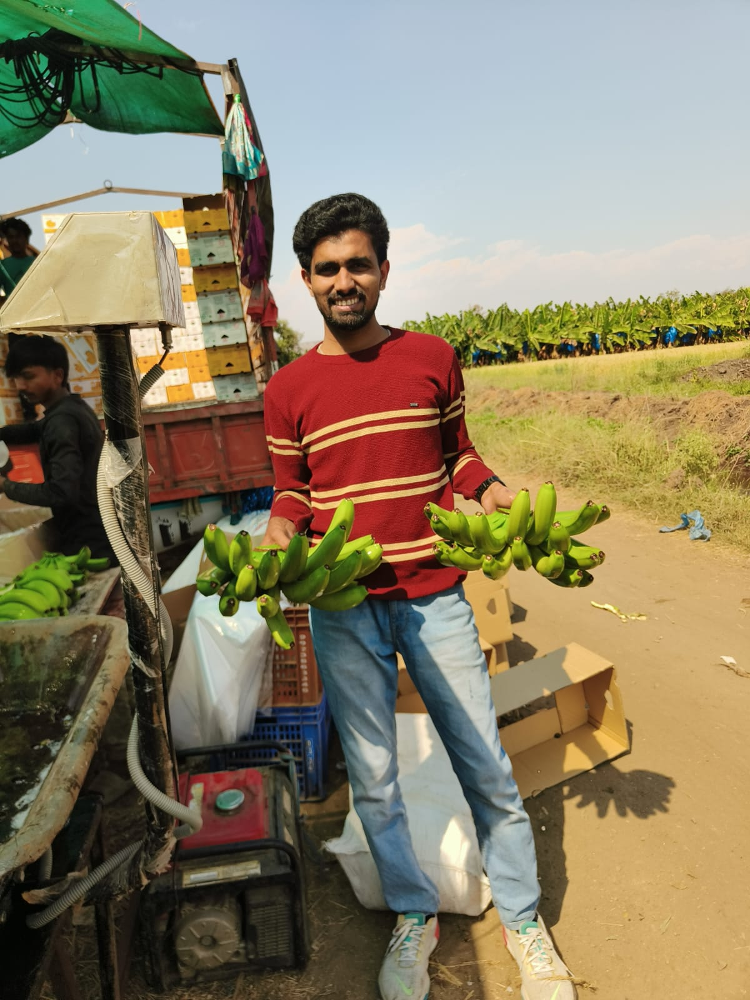
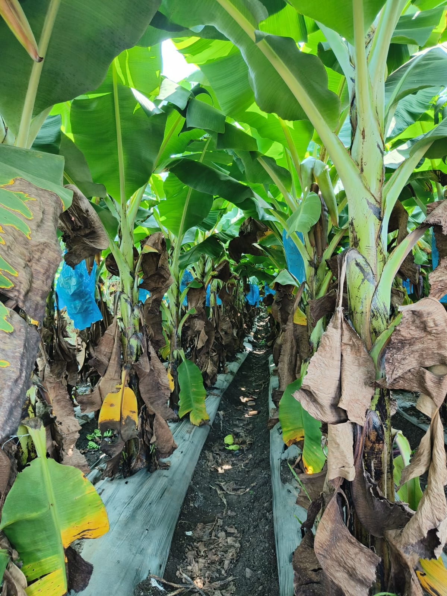
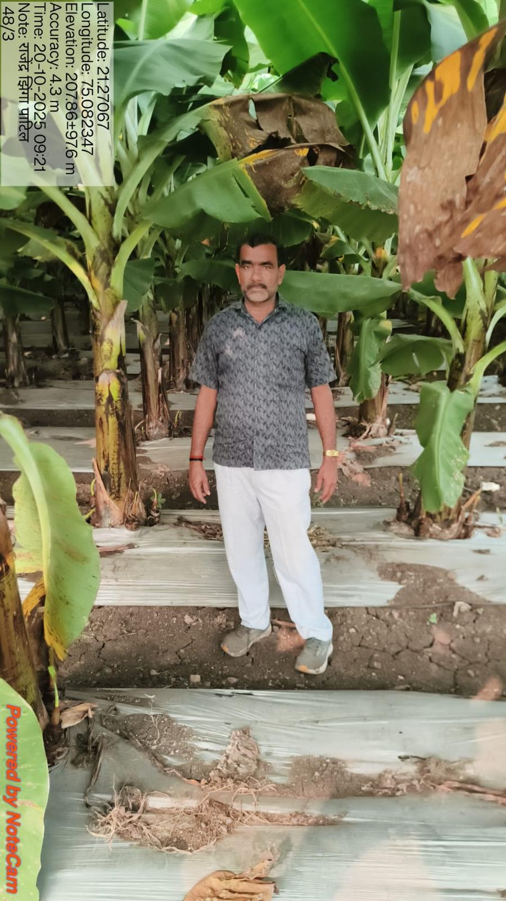
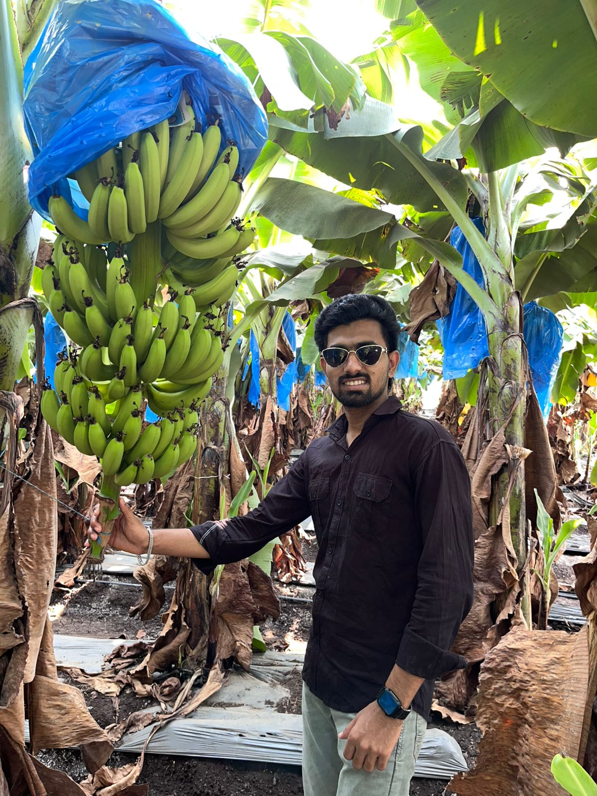
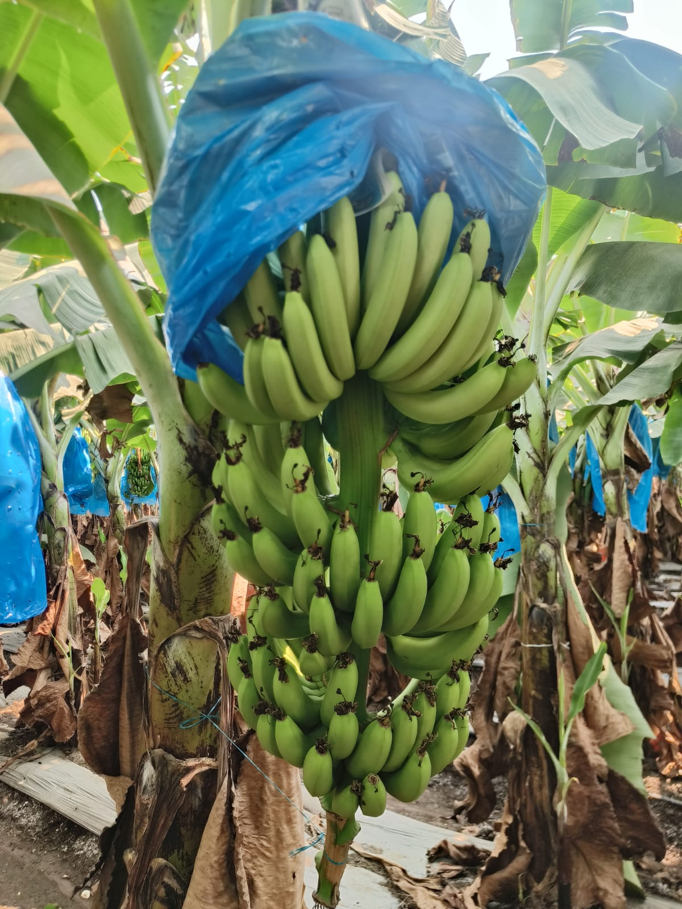
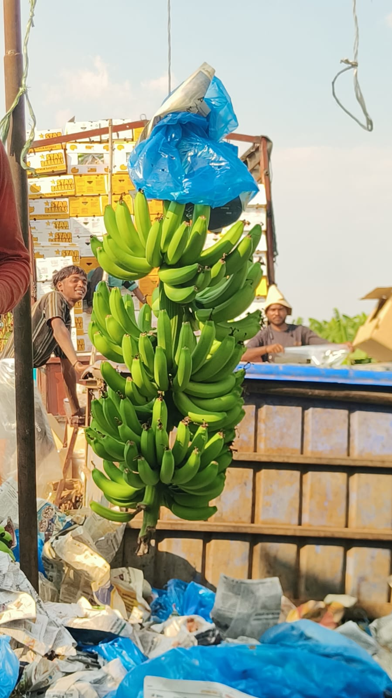
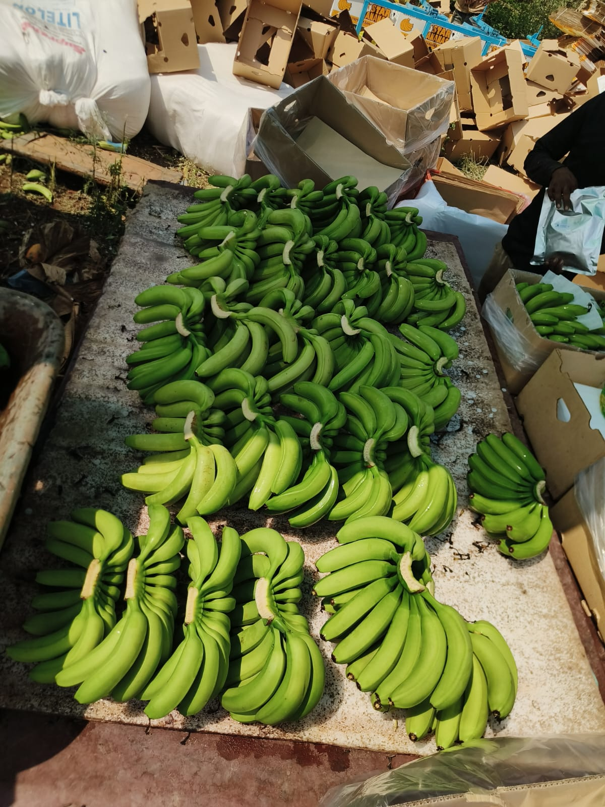

Plantation care
Crop growth depends on regular observation of plant health, soil, water, nutrition and field conditions.
FARMER'S SON • BANANA GROWER • DEVELOPER
I come from a farming family and have hands-on knowledge of banana cultivation. I combine that real-world understanding with software to solve problems that matter to farmers.

01 / MY STORY
Before I started building digital products, I was already learning from a real environment: banana fields. As a farmer's son, I have seen the daily decisions involved in cultivation, harvesting, protection, and selling.
Farmers do not need technology simply because it is new. They need technology when it makes a difficult decision clearer, faster, safer, or more accessible.
That belief shapes the way I approach technology: observe first, understand the person, simplify the experience, then build.
02 / BANANA FARMING
I understand banana farming not only as a topic, but as a lived environment. These are the areas I think about when designing agricultural technology.
Crop growth depends on regular observation of plant health, soil, water, nutrition and field conditions.
Visible changes in leaves can be an early signal that something is wrong. Timely identification can support better decisions.
Banana bunches are protected during development to support fruit quality and reduce exposure to field conditions.
Harvest timing, careful handling, grading and packing are important parts of taking the crop from field to market.
Farm decisions involve balancing crop needs with available water, labour, time and input costs.
Any digital tool must work in real field conditions and should reduce complexity rather than add another burden.

03 / FEATURED PROJECT
AI-assisted banana plantation health management
THE PROBLEM
Farmers regularly inspect plants and leaves, but identifying a disease from visual symptoms can be difficult, especially when symptoms are subtle or similar. Delayed identification can lead to delayed action and uncertainty.
My goal was to explore a practical digital experience that lets a farmer capture a leaf image and receive an AI-assisted indication of the likely disease class.

Lifelong banana farmer with decades of experience.
THE SOLUTION



04 / CORE PRINCIPLES
Use familiar language and direct actions.
Design for sunlight, mobile use, time pressure and real field conditions.
Prioritize the information needed for the next decision.
Explain what the system is doing and avoid presenting AI as unquestionable.
05 / FROM MY FARM
These photographs are part of the story. They show the real context that shaped my interest in agricultural technology.

“I don't want to build technology for farmers without understanding their world. I want to build it with that world in mind.”
06 / LET'S CONNECT
I'm interested in full-stack development, AI and agricultural technology — especially solutions grounded in real-world farming needs.